Dra. Fernanda Fiori · Imersão Prática Botox com Segurança Médica
O que está no ar em cursos de toxina para médicos
Os anúncios ativos de 13 professores e escolas que vendem curso e imersão de toxina botulínica e injetáveis para médicos, tirados da Biblioteca de Anúncios da Meta: o link de cada um, as imagens que estão rodando e o que vale observar em cada página. É referência para as próximas peças da Imersão Prática.
O retrato em números
Lemos 281 anúncios, entre os 417 que estas páginas mantêm ativos hoje. Três números resumem como esse mercado anuncia:
Como usar este material
Os anúncios que estão no ar há mais tempo
São a prova mais forte de que o formato funciona.
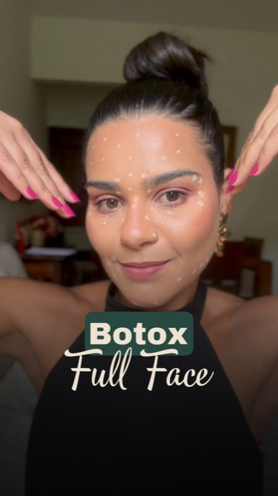
365 dias Dra. Milena Macedo · Vídeo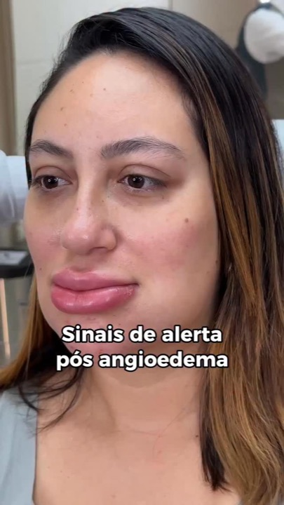
203 dias Escultura Facial por João Pithon · Vídeo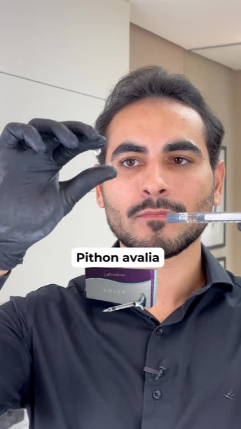
203 dias Escultura Facial por João Pithon · Vídeo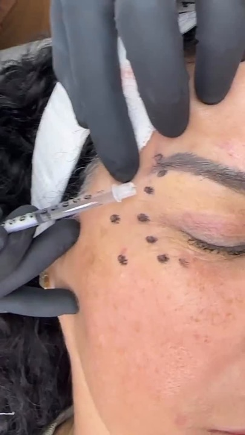
202 dias Escultura Facial por João Pithon · Vídeo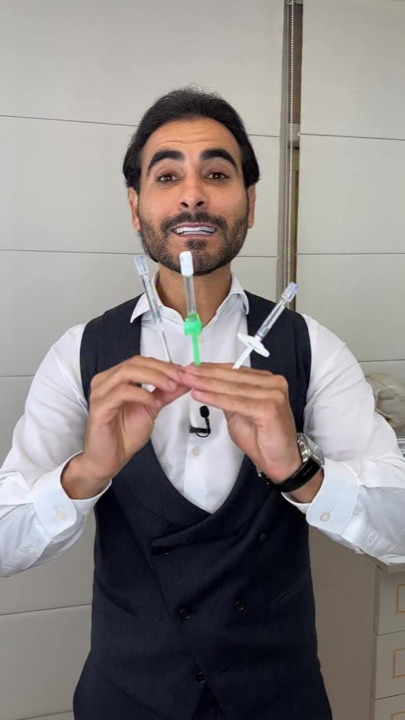
182 dias Escultura Facial por João Pithon · VídeoO que se repete entre os melhores
“Exclusivo para médicos” escrito na peça
No Meta não dá para escolher “médico” como público. Quem separa o médico do curioso é o próprio anúncio, e os melhores dizem isso na primeira linha ou na arte.
Bravo Academy · MedCof Derma · MAAC · Dr. Lázaro · Thiago PimentaVender o raciocínio, não o ponto de aplicação
“Resultado natural não é sorte, é planejamento anatômico”, “decisão clínica antes da técnica”, “cada ponto tem um motivo técnico claro”. O médico compra o critério para decidir sozinho.
MedCof Derma · MAAC · ToxPoint · Mauricio de MaioO medo do médico, dito com as palavras dele
“O caso que você ainda não aceita”, “morria de medo de ser processada”, “ainda sente que faltam protocolo, raciocínio ou segurança”. É a mesma porta de entrada da Imersão Prática: a insegurança técnica.
MedCof Derma · Milena Macedo · Maria Lígia · Thiago PimentaUma aula de verdade dentro do anúncio
Complicação, marcação, dose, escolha de produto. Quem ensina de graça no anúncio fica meses no ar: 203 dias (João Pithon) e 177 dias (Julliano Setti).
João Pithon · Julliano Setti · Marina CarvalhoMostrar a sala
Turma de jaleco em volta da paciente, cabeça de treino, plateia cheia, foto da 13ª edição, a apostila na mão. Prova que o curso é prático e que outros médicos já estão lá.
Bravo Academy · MAAC · Dr. Lázaro · VIV ExperienceA mesma oferta em dezenas de versões
Mesma legenda, arte ou gancho diferente: 24 artes no MedCof, 38 aberturas na Marina Carvalho, 63 versões na Bravo em 15 dias. Uma versão nova custa pouco, e é assim que se descobre a que vende.
MedCof Derma · Marina Carvalho · Bravo AcademyUm nome para o método
Matemática da Beleza®, MD Codes, Quiet Beauty®, Formação Especialista em Botox. O nome aparece em toda peça e separa “o método dela” de “mais um curso”. A Dra. Fernanda já tem o dela: Método Botox de Midas.
Bravo Academy · Mauricio de Maio · MAAC · João PithonOs especialistas
- 01Bravo Academy63 ativos
- 02MedCof Derma (papodedermato)24 ativos
- 03Escultura Facial por João Pithon95 ativos
- 04Master Injector Academy70 ativos
- 05Dra. Milena Macedo10 ativos
- 06Dra Marina Carvalho38 ativos
- 07Imersão ToxPoint1 ativo
- 08Dr. Thiago Pimenta1 ativo
- 09Dr. Julliano Setti8 ativos
- 10Mauricio de Maio2 ativos
- 11Dra. Maria Lígia (marialigiadermato)55 ativos
- 12Dr. Lázaro Lourenço31 ativos
- 13Dr. Vinicius Valença6 ativos
01
Bravo Academy
Dra. Bruna Bravo, dermatologista · hands-on de toxina botulínica no Rio de Janeiro
Biblioteca de anúncios ↗ @brunabravodermato ↗
O que observar
- 63 anúncios ativos e nenhum com mais de 15 dias: cada turma nasce com dezenas de versões da mesma oferta.
- A frase que filtra está em toda legenda: “Exclusivo para médicos com CRM ativo.”
- Vende a prática, não a aula: “1 dia inteiro de prática real… em pacientes modelo reais, com turma reduzida”. As imagens mostram a turma de jaleco em volta da paciente e a cabeça de treino.
- Deu nome ao método: Matemática da Beleza®.
- A professora aparece sentada no consultório falando para a câmera, com a mesma calma de uma consulta.
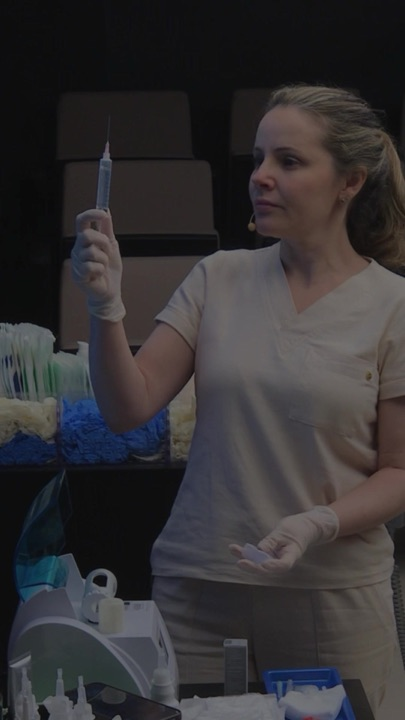
Já imaginou sendo a primeira escolha dos pacientes em sua região? Isso acontece quando você: ✅ Domina técnicas de verdade ✅ Atende com segurança ✅ Tem certificação…
Botão: Saiba mais ver anúncio ↗
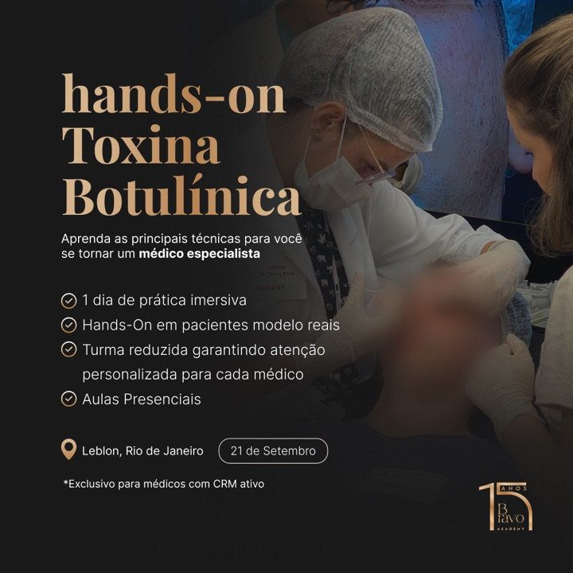
🧬 Um dia de prática pode transformar sua carreira na medicina estética. No hands-on Toxina Botulínica da Bravo Academy, você aprende as principais técnicas com prática…
Botão: Saiba mais ver anúncio ↗
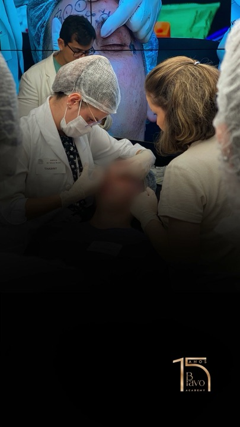
Na imersão hands-on Toxina Botulínica, você tem 1 dia inteiro de prática real: aprende as principais técnicas e aplica em pacientes modelos reais, com turma reduzida e…
Botão: Saiba mais ver anúncio ↗
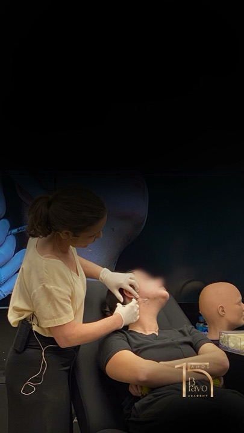
Chegou a hora de se tornar a referência que sua cidade procura. 🌟 Em 1 dia de imersão hands-on em Toxina Botulínica, você pratica em pacientes modelos reais e aplica a…
Botão: Saiba mais ver anúncio ↗
Aplicar toxina botulínica com segurança e naturalidade exige mais do que técnica: exige ciência, anatomia e prática supervisionada. No dia 21/09, no Rio de Janeiro, você…
Botão: Saiba mais ver anúncio ↗
Inscrições abertas para especialização em Toxina Botulínica na Bravo Academy. 🎯 ✅ Metodologia 100% prática ✅ Professores reconhecidos nacionalmente ✅ Certificação que…
Botão: Saiba mais ver anúncio ↗
02
MedCof Derma (papodedermato)
Curso de Cosmiatria Avançada do MedCof Derma · restrito a médicos
Biblioteca de anúncios ↗ Página no Facebook ↗
O que observar
- 24 anúncios com a mesma legenda; o que muda é a arte. Cada arte é uma frase-tese diferente.
- As frases falam da insegurança do médico sem ofender: “Resultado natural em injetáveis não é sorte. É planejamento anatômico.” e “A diferença entre o médico que aplica e o que planeja.”
- O gancho mais forte: “O caso que você ainda não aceita. Todo médico tem um tipo de paciente que recusa por insegurança.” É a mesma dor que a Imersão Prática resolve.
- Anúncio só para a própria base: “É aluno ou ex-aluno MedCof?”, com condição para quem já comprou outro curso.
- Visual limpo, claro, com a paciente na maca ao fundo. Parece material de sociedade médica, não de promoção.

Domine o planejamento facial e a execução técnica com uma metodologia sólida, restrita a médicos e focada em resultados naturais e individualizados. 👉 Garanta sua vaga
Botão: Saiba mais ver anúncio ↗
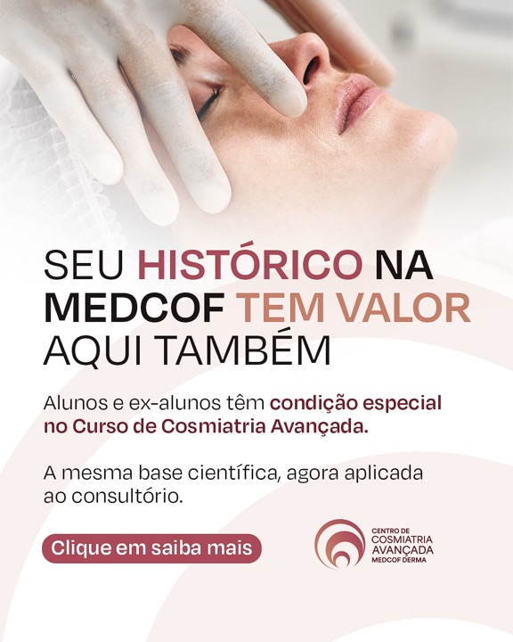
Domine o planejamento facial e a execução técnica com uma metodologia sólida, restrita a médicos e focada em resultados naturais e individualizados. 👉 Garanta sua vaga
Botão: Saiba mais ver anúncio ↗
Domine o planejamento facial e a execução técnica com uma metodologia sólida, restrita a médicos e focada em resultados naturais e individualizados. 👉 Garanta sua vaga
Botão: Saiba mais ver anúncio ↗
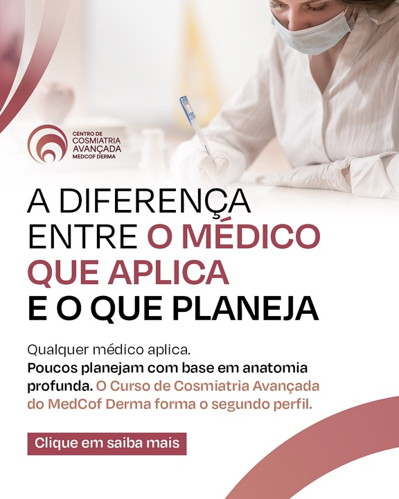
Domine o planejamento facial e a execução técnica com uma metodologia sólida, restrita a médicos e focada em resultados naturais e individualizados. 👉 Garanta sua vaga
Botão: Saiba mais ver anúncio ↗
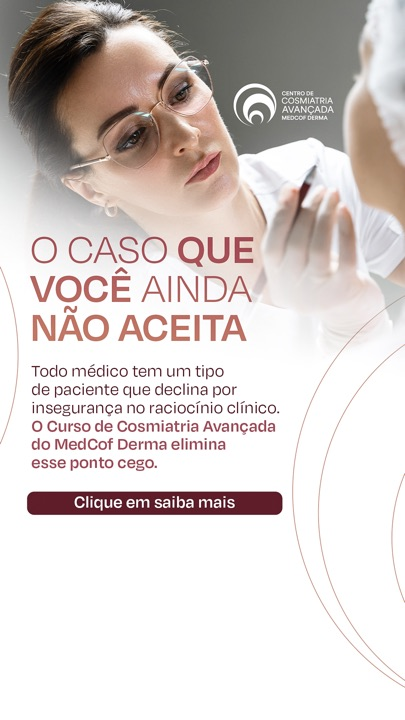
Domine o planejamento facial e a execução técnica com uma metodologia sólida, restrita a médicos e focada em resultados naturais e individualizados. 👉 Garanta sua vaga
Botão: Saiba mais ver anúncio ↗

Domine o planejamento facial e a execução técnica com uma metodologia sólida, restrita a médicos e focada em resultados naturais e individualizados. 👉 Garanta sua vaga
Botão: Saiba mais ver anúncio ↗
03
Escultura Facial por João Pithon
Formação Especialista em Botox e Curso de Toxina Express · conteúdo técnico para injetores
Biblioteca de anúncios ↗ @drjoaopithon ↗
O que observar
- 95 anúncios ativos e alguns no ar há 203 dias. É a maior operação do grupo.
- O anúncio é uma aula curta e gratuita: “Sinais de alerta pós angioedema”, reticulação do preenchedor, marcação com pontos na testa.
- Complicação vira conteúdo: “Este edema pode assustar o paciente e o profissional, caso o injetor não tenha uma compreensão técnica de como resolver.”
- Título escrito sobre o vídeo, com a técnica em uma linha: “Aplicação de toxina para tirar as rugas do Wi-Fi sem perder o arqueamento.”
- Pede comentário em vez de clique: “Para se inscrever na Formação Especialista em Botox, comente: FEB.”
Angioedema é uma possível complicação do preenchimento facial. A minha sugestão, quando o paciente apresentar um angioedema preenchimento, ou também simplesmente devido…
Botão: Perfil do Instagram ver anúncio ↗
Juvederm Volux é um preenchedor à base de ácido hialurônico com altíssima concentração e reticulação. A reticulação é a relação entre as moléculas de ácido hialurônico e…
Botão: Perfil do Instagram ver anúncio ↗
Toxina em orbiculares. Para se inscrever na Formação Especialista em Botox, comente: FEB
Botão: Perfil do Instagram ver anúncio ↗
Os 3 melhores preenchedores para os lábios. Diferentemente de todas as outras regiões da face, a mucosa labial, como o próprio nome diz, mucosa, apresenta uma diferença…
Botão: Perfil do Instagram ver anúncio ↗
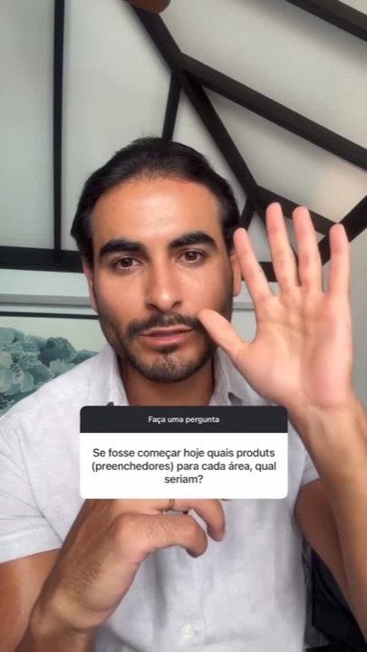
Existem 5 tipos de preenchedores ideais para face: alto G’, alto TΔ, baixo Swelling Factor, baixo G’ e alto G’ com coesividade. Cada um com uma função sob medida!
Botão: Perfil do Instagram ver anúncio ↗
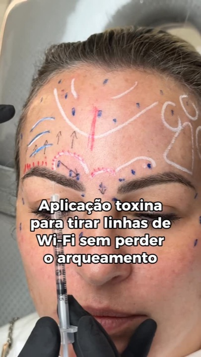
Aplicação de toxina para tirar as rugas do Wi-Fi sem perder o arqueamento
Botão: Perfil do Instagram ver anúncio ↗
04
Master Injector Academy
MAAC · congresso de estética médica para médicos com CRM ativo (São Paulo, outubro)
Biblioteca de anúncios ↗ Página no Facebook ↗
O que observar
- 70 anúncios ativos, quase todos com botão de cadastro. A promessa é “decisão clínica antes da técnica”.
- Uma peça explica a norma de uso de imagem de paciente: “Mais do que mostrar um antes e depois, é importante contextualizar o tratamento… e informar sobre possíveis riscos.” Ética virou argumento de venda.
- Tema polêmico no gancho: “Exossomos: ciência ou marketing?”, com um médico falando para a câmera.
- Mostra o tamanho do evento: plateia cheia e os professores lado a lado na arte.
- Marca registrada no conceito: Quiet Beauty®.
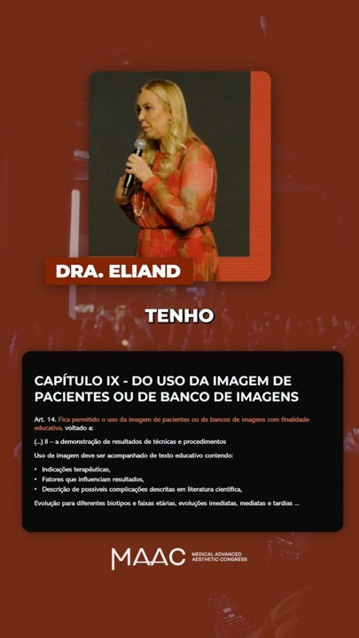
Compartilhar resultados exige responsabilidade e atenção às normas. Mais do que mostrar um antes e depois, é importante contextualizar o tratamento, apresentar…
Botão: Perfil do Instagram ver anúncio ↗
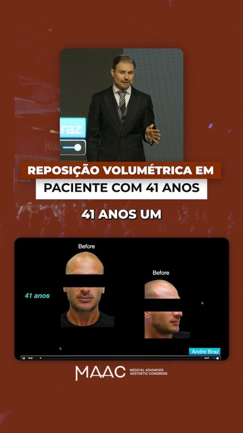
O planejamento individualizado é essencial para alcançar resultados naturais e equilibrados. A associação entre toxina botulínica, preenchedores, bioestimuladores e…
Botão: Perfil do Instagram ver anúncio ↗
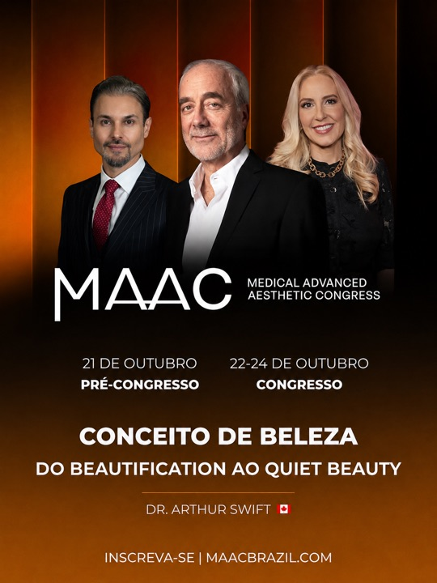
O MAAC 2026 reúne médicos com CRM ativo para uma imersão em decisão clínica, segurança e prática mais ética e elegante. 22 a 24 de outubro, São Paulo. Garanta sua…
Botão: Cadastre-se ver anúncio ↗
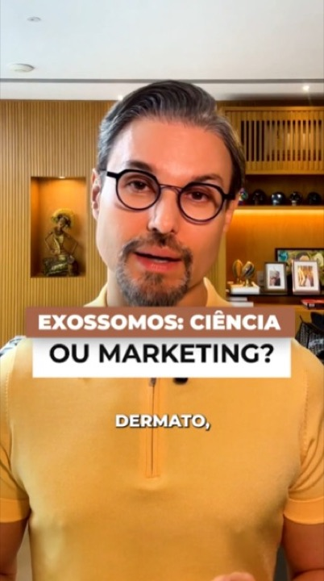
Os exossomos chegaram cercados de promessas milagrosas: regeneração, rejuvenescimento e recuperação tecidual. Mas na medicina séria, potencial científico não pode virar…
Botão: Perfil do Instagram ver anúncio ↗
De 21 a 24 de outubro, em São Paulo, o MAAC reúne médicos com CRM ativo para discutir decisão clínica, segurança e prática mais refinada. 📍 Vagas por lote, garanta a sua.
Botão: Cadastre-se ver anúncio ↗
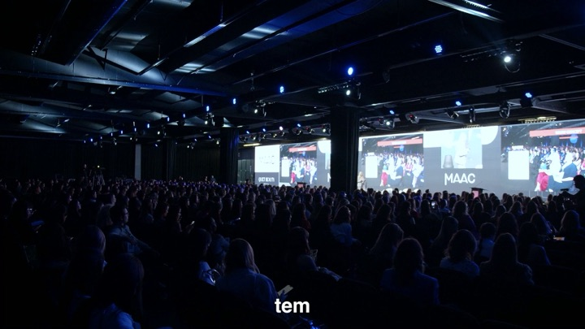
Assista ao vídeo para conhecer o MAAC Congress 2026, o congresso da Quiet Beauty®️ para médicos com CRM ativo. De 21 a 24 de outubro, no Pro Magno Centro de Eventos, São…
Botão: Saiba mais ver anúncio ↗
05
Dra. Milena Macedo
Imersão Botox Full Face e Bioestimulador na Prática
Biblioteca de anúncios ↗ @dramilena.macedo ↗
O que observar
- Os anúncios mais antigos estão no ar há 365 dias e falam com a paciente (“Se eu tivesse pouco dinheiro…”). Eles levam para o perfil e aquecem quem depois vê o curso.
- Conta a própria história de medo: “morria de medo de fazer alguma coisa errada e ser processada”.
- Mostra a aplicação nela mesma: “Vídeo-aulas com autoaplicação”, com a marcação dos pontos no próprio rosto.
- Usa a caixinha de perguntas do Instagram: “Tenho dúvida sobre qual bioestimulador indico para cada paciente.”
➡ A aplicação de toxina botulínica Full Face é o tratamento preventivo antienvelhecimento que mais vale a pena o investimento, na minha opinião. 🚨 Mas tem que ser a…
Botão: Perfil do Instagram ver anúncio ↗
👉🏼 A aplicação de Toxina Botulínica Full Face é uma aplicação feita no rosto todo, mediante a necessidade individual de cada paciente. ❗Essa forma de aplicação promove…
Botão: Perfil do Instagram ver anúncio ↗
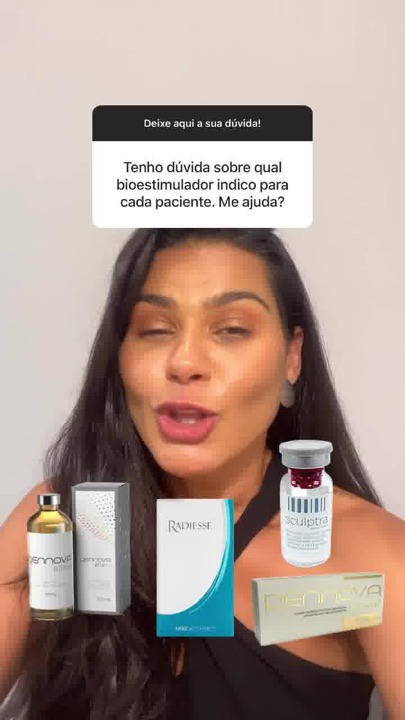
Quando eu não dominava os bioestimuladores colágeno morria de medo de fazer alguma coisa errada e ser processada. Isso me fez cobrar pouco pelo procedimento e…
Botão: Saiba mais ver anúncio ↗
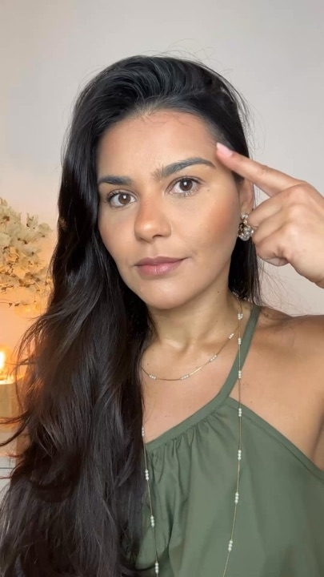
Eu nunca pensei em trabalhar com procedimentos baratinhos e com pouca eficiência para conseguir recorrência de novos pacientes. Isso me fez focar em aprimorar a…
Botão: Ver detalhes ver anúncio ↗
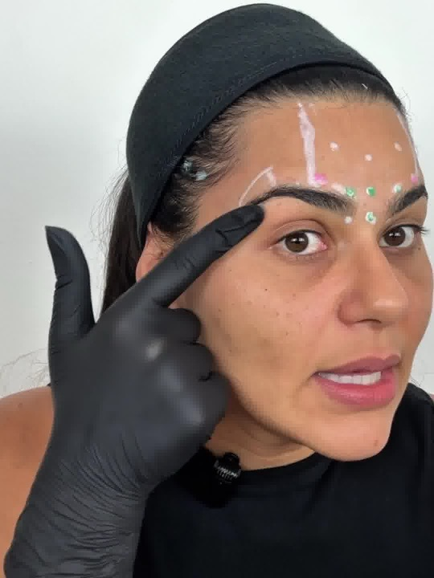
Imersão de aplicação de Toxina Botulínica Full Face com a Dra. Milena Macedo. Aprenda na prática como fidelizar cada vez mais pacientes: ✅ Vídeo-aulas com autoaplicação…
Botão: Ver detalhes ver anúncio ↗
06
Dra Marina Carvalho
Curso Botox Full Face · do iniciante ao avançado
Biblioteca de anúncios ↗ Página no Facebook ↗
O que observar
- 38 anúncios ativos, todos com a mesma legenda. Só o começo do vídeo muda: um erro de aplicação, a doutora no notebook, a marcação do rosto.
- O gancho que mais aparece é o erro: “Erro comum no botox do canto dos olhos.”
- Lista objetiva do que vem no curso: certificado · prática em pacientes reais · contato dos fornecedores · suporte para dúvidas.
- Várias aberturas são vídeos de outras pessoas, com a legenda borrada e “Créditos do vídeo inicial:” em branco (veja “O que não copiar”).
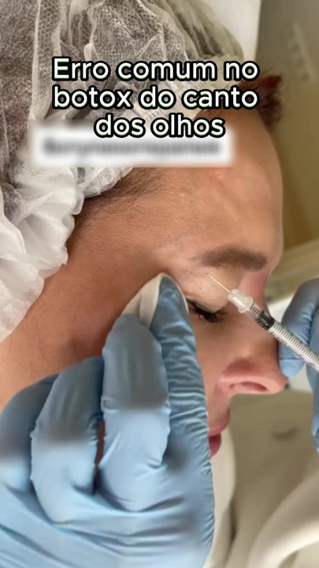
Curso completo de Botox Full Face com a Dra. Marina Carvalho. Fature alto por mês e se destaque na sua região... ✅ Certificado de conclusão ✅ Aulas teóricas e práticas…
Botão: Saiba mais ver anúncio ↗
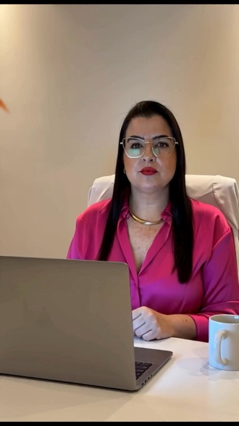
Curso completo de Botox Full Face com a Dra. Marina Carvalho. Fature alto por mês e se destaque na sua região... ✅ Certificado de conclusão ✅ Aulas teóricas e práticas…
Botão: Saiba mais ver anúncio ↗
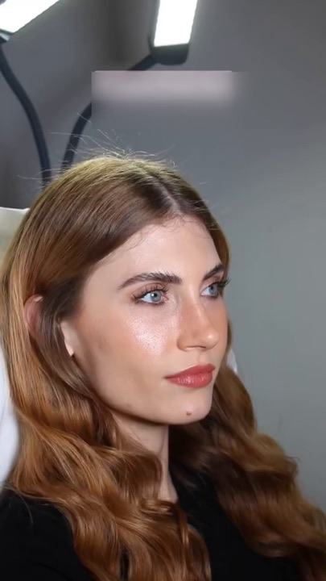
Curso completo de Botox Full Face com a Dra. Marina Carvalho. Fature alto por mês e se destaque na sua região... ✅ Certificado de conclusão ✅ Aulas teóricas e práticas…
Botão: Saiba mais ver anúncio ↗
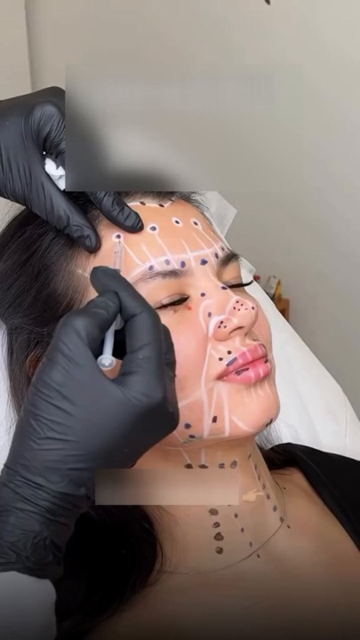
Curso completo de Botox Full Face com a Dra. Marina Carvalho. Fature alto por mês e se destaque na sua região... ✅ Certificado de conclusão ✅ Aulas teóricas e práticas…
Botão: Saiba mais ver anúncio ↗
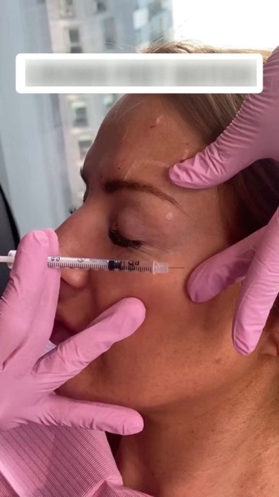
Curso completo de Botox Full Face com a Dra. Marina Carvalho. Fature alto por mês e se destaque na sua região... ✅ Certificado de conclusão ✅ Aulas teóricas e práticas…
Botão: Saiba mais ver anúncio ↗
07
Imersão ToxPoint
Imersão ToxPoint · toxina botulínica em Vitória (ES)
Biblioteca de anúncios ↗ Página no Facebook ↗
O que observar
- Um único anúncio, no ar há 122 dias, levando para o WhatsApp.
- Ataca de frente a ideia de “ponto seguro”: “O mercado normalizou pontos em ‘zonas de segurança’ que não entregam resultado.”
- A tese em uma linha: “Não é sobre aplicar mais, é sobre aplicar melhor.” e “cada ponto tem um motivo técnico claro”.
- Atenção para a Imersão Prática: aqui “segurança” aparece como defeito. A resposta é mostrar que segurança, no curso da Dra. Fernanda, é anatomia e planejamento, e não ponto tímido.
08
Dr. Thiago Pimenta
Curso avançado de toxina botulínica para médicos
Biblioteca de anúncios ↗ @drthiagopimenta ↗
O que observar
- Anúncio de último dia: “Hoje é o último dia para se inscrever no meu curso avançado de toxina botulínica para médicos.”
- Ele sentado, de jaleco, falando para a câmera. Sem arte e sem título na tela.
- O que promete é o erro evitado: “os erros mais comuns durante a aplicação e como evitá-los”.
- O botão abre conversa no Direct, e não uma página de venda.
09
Dr. Julliano Setti
Imersão de Botox e Preenchimento Full Face · Curitiba
Biblioteca de anúncios ↗ @drjullianosetti ↗
O que observar
- Mostra caso real como videoaula: “Nesse vídeo-aula eu mostro o passo a passo da técnica, a quantidade utilizada e o resultado final.” Está no ar há 177 dias.
- Faz série em partes (“Parte 6 | Preenchimento do lábio inferior”), e quem viu uma parte volta para a próxima.
- Marcação no manequim para ensinar anatomia sem paciente: “mostro em manequim uma técnica segura e prática”.
- A oferta da imersão vai para o WhatsApp; o conteúdo técnico vai para o perfil.
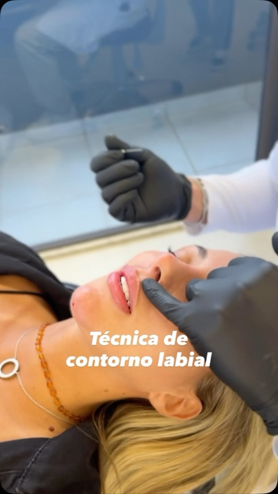
Contorno labial também faz toda a diferença no resultado final! Nesse caso, a paciente já tinha preenchimento labial, mas buscava um contorno mais definido e harmônico.…
Botão: Perfil do Instagram ver anúncio ↗
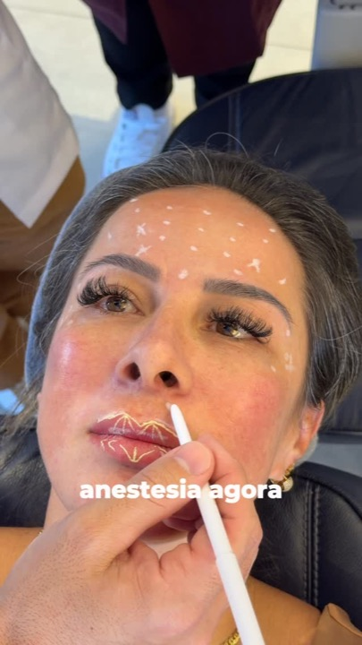
Muita gente acredita que o preenchimento labial precisa ser um procedimento doloroso, mas existem técnicas que tornam a experiência muito mais confortável. No vídeo,…
Botão: Perfil do Instagram ver anúncio ↗
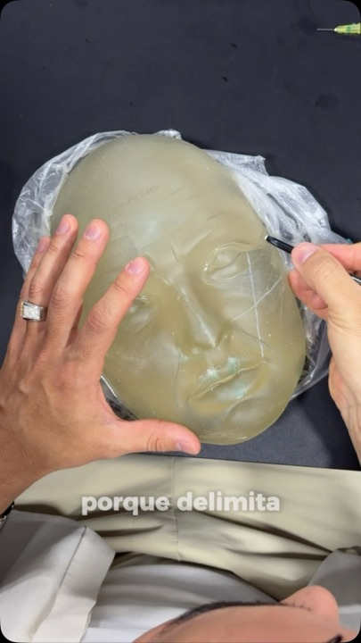
Preenchimento de Malar: muito mais do que simplesmente “preencher a maçã do rosto”. Neste Reels, mostro em manequim uma técnica segura e prática, desde a marcação do…
Botão: Perfil do Instagram ver anúncio ↗
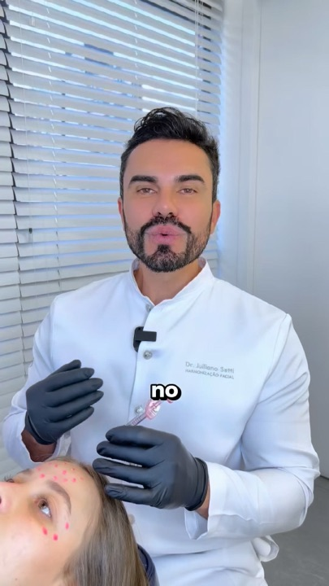
Imersão de Botox e Preenchimento Full Face com Dr. Juliano Setti em Curitiba Com aulas teóricas, laboratoriais e muita prática em pacientes modelo, você vai aprender…
Botão: WhatsApp ver anúncio ↗
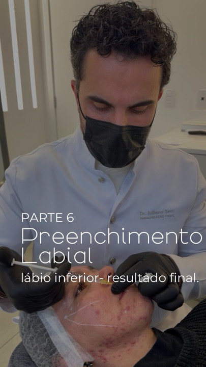
Parte 6 | Preenchimento do lábio inferior Após o planejamento e a anestesia, iniciamos o preenchimento do lábio inferior, respeitando o desenho previamente definido e as…
Botão: Perfil do Instagram ver anúncio ↗
10
Mauricio de Maio
Criador do MD Codes · imersões no MD Codes Institute (São Paulo)
Biblioteca de anúncios ↗ Página no Facebook ↗
O que observar
- Só 2 anúncios ativos, mas é a referência internacional do tema e a Página tem 23 mil curtidas.
- Pergunta de identidade no gancho: “O que é um profissional de elite?”, com ele aplicando, de máscara, em tom escuro.
- O método tem código (Ck3) e o carrossel explica que o mesmo código tem três abordagens: “The code may be the same, but the diagnosis, layer, technique, and objective are not.”
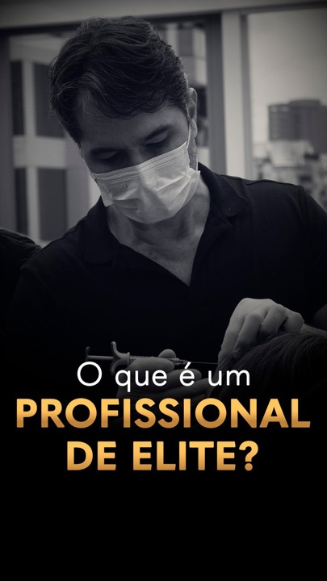
O que significa ser um profissional de Elite? Pode parecer simples, mas não é. O alto padrão clínico exige raciocínio refinado, domínio técnico, visão estratégica e a…
Botão: WhatsApp ver anúncio ↗
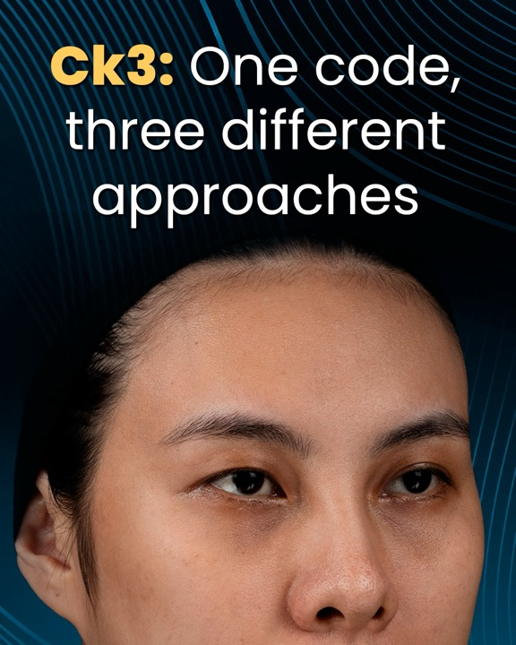
Ck3 has multiple approaches — and each one responds to a different clinical need. From structural retrusion and midcheek volume loss to gummy smile and eye bags, knowing…
Botão: Cadastre-se ver anúncio ↗
11
Dra. Maria Lígia (marialigiadermato)
Dra. Maria Lígia, dermatologista · Clínica Supreme, Goiânia
Biblioteca de anúncios ↗ @marialigiadermato ↗
O que observar
- É de Goiânia, a mesma cidade da Dra. Fernanda, e está vendendo imersão presencial para médicos em 19 e 20 de outubro.
- Fala com quem já faz injetável facial: “Você já trabalha com injetáveis faciais. Mas quando o paciente pergunta sobre corporal, você ainda sente que faltam protocolo, raciocínio ou segurança?”
- Aparece andando pela clínica, bem vestida e acompanhada, no tom de convite: “Este convite é para o médico que já percebeu que existe espaço para ir além do facial.”
- Tem duas formas de participar (Hands On e Observador) e um dia só de posicionamento e precificação.
- A mesma Página roda anúncio para paciente com WhatsApp; os dois públicos se misturam no perfil.
Vem aí a IMERSÃO FULL BODY SUPREME para médicos ✨ Uma experiência exclusiva para quem quer dominar o conceito FULL BODY com estratégia, técnica e visão de negócio. Você…
Botão: Comprar agora ver anúncio ↗
Este convite é para o médico que já percebeu que existe espaço para ir além do facial. Nos dias 19 e 20 de outubro, a Clínica Supreme recebe uma turma reduzida para dois…
Botão: Sem botão ver anúncio ↗
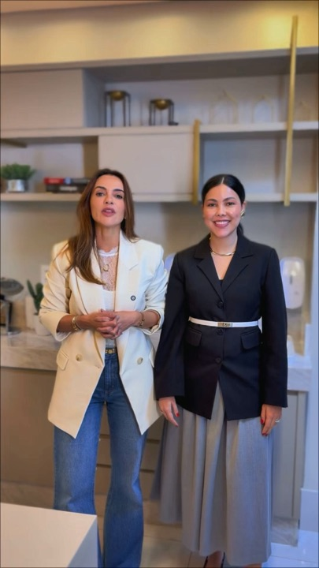
Você já trabalha com injetáveis faciais. Mas quando o paciente pergunta sobre corporal, você ainda sente que faltam protocolo, raciocínio ou segurança para estruturar o…
Botão: Sem botão ver anúncio ↗
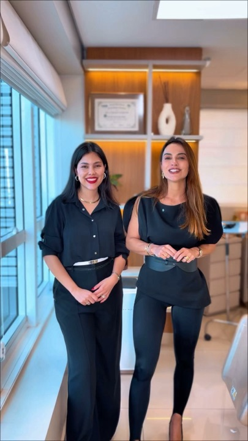
O corporal não precisa ser uma sequência de procedimentos isolados. Para entregar uma experiência realmente estruturada, é preciso saber avaliar, combinar estratégias e…
Botão: Sem botão ver anúncio ↗
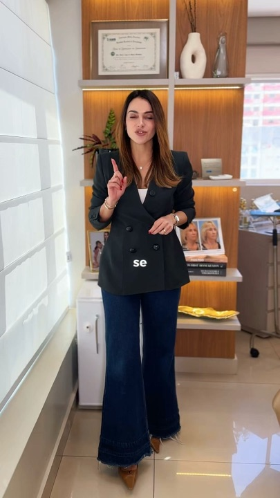
Se você já atua na estética médica, talvez o próximo passo da sua clínica não seja fazer mais do mesmo. O mercado facial se tornou cada vez mais competitivo. Enquanto…
Botão: Ver detalhes ver anúncio ↗
12
Dr. Lázaro Lourenço
Dr. Lázaro Lourenço, nutrólogo · Imersão em Terapias Injetáveis
Biblioteca de anúncios ↗ @drlazarolourenco ↗
O que observar
- Anúncio no ar há 118 dias e 13 edições da mesma imersão. A foto da turma inteira vira prova: “Quem confia no Constancy não está sozinho.”
- Assina com CRM e RQE na legenda e marca o público: “[EXCLUSIVO PARA MÉDICOS]”.
- Tira o medo do colega: “Sem achismos. Sem charlatanismo. Sem riscos para sua carreira.”
- Vídeos gravados no carro, com título em faixa branca: “Médico não pode ganhar dinheiro?”. Tom de conversa, não de aula.
Médico(a), você pode ser o próximo a dominar isso! Com protocolos estratégicos exclusivos, médicos visionários como você estruturaram suas ofertas e transformaram seus…
Botão: Sem botão ver anúncio ↗
2 dias de imersão. 13 edições aprofundando a prática médica com ciência, estratégia e aplicação clínica. A 13ª Imersão em Terapias Injetáveis reuniu médicos que…
Botão: Ver detalhes ver anúncio ↗
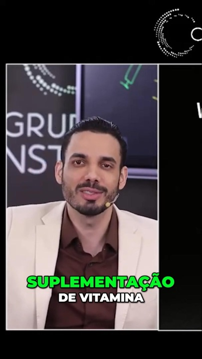
👨⚕️ Médico, você ainda tem dúvidas sobre Terapias Injetáveis? ✅ Descubra como criar protocolos de tratamento personalizados utilizando Terapias Nutricionais Injetáveis…
Botão: Ver detalhes ver anúncio ↗
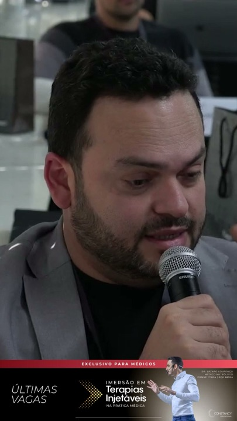
👨⚕️ Doc, você ainda tem dúvidas sobre Terapias Injetáveis? ✅ Descubra como criar protocolos de tratamento personalizados utilizando Terapias Nutricionais Injetáveis de…
Botão: Ver detalhes ver anúncio ↗
Segue @drlazarolourenco Médico precisa ganhar dinheiro. E não tem nada de errado nisso. A narrativa de que médico bom é médico que não pensa em dinheiro é uma das mais…
Botão: Ver detalhes ver anúncio ↗
Segue @drlazarolourenco Talvez você seja o melhor médico da sua cidade. Mas não é o mais conhecido. Não é o mais procurado. E não é o que ganha mais. Técnica excelente…
Botão: Ver detalhes ver anúncio ↗
13
Dr. Vinicius Valença
VIV Experience · imersão presencial para médicos em São Paulo
Biblioteca de anúncios ↗ Página no Facebook ↗
O que observar
- Arte em forma de cardápio: soma o valor de cada curso incluído (R$ 40.988, riscado) e mostra o preço do 1º lote (R$ 1.797).
- Mostra o que o aluno leva na mão: o quadro da aula e “uma apostila completa”.
- Todas as copies começam chamando o público pelo nome: “Médico(a), …”.
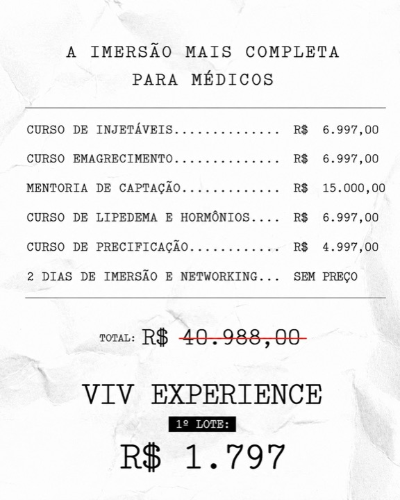
Médico(a), em 2026, gostaria de atuar na área que mais cresce na medicina? Nos dias 7 e 8 de novembro de 2026, São Paulo vai receber a maior imersão presencial para…
Botão: Ver detalhes ver anúncio ↗
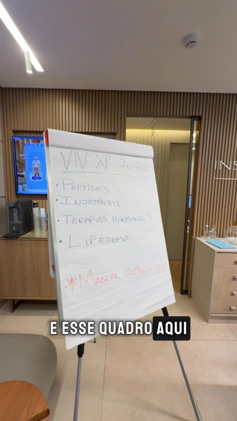
Médico(a), você gostaria de atuar em consultório particular na área que mais cresce na medicina? São Paulo vai receber a maior imersão presencial para médicos do…
Botão: Ver detalhes ver anúncio ↗
Médico, você está preparado para a nova medicina? O mercado mudou. Hoje, os pacientes buscam profissionais que ofereçam tratamentos completos, seguros e baseados em…
Botão: Ver detalhes ver anúncio ↗
O que não copiar
- Promessa de dinheiro. “Fature alto por mês”, “lucrar mais de R$ 1.500”, “máquinas de faturamento”. Para o dermatologista, esse gancho tira autoridade do curso. E a Dra. Fernanda assina como médica, então vale a régua da publicidade médica (Resolução CFM 2.336/2023): sem promessa de resultado e sem sensacionalismo.
- Lista de profissões misturada. “Médicos, Dentistas, Biomédicos, Enfermeiros, Farmacêuticos e Esteticistas” na mesma frase. Um curso que se chama “Segurança Médica” não pode abrir a sala para todo mundo.
- Anúncio de paciente na mesma vitrine do curso. “Seja paciente modelo com valor especial” e reels de paciente no meio das peças para médicos quebram o tom de colega para colega.
- “Segurança” como sinônimo de ponto tímido. A concorrência já usa isso contra quem fala em segurança (“zonas de segurança que não entregam resultado”). Na Imersão Prática, segurança é anatomia, dose, planejamento e saber resolver a intercorrência, e as peças precisam mostrar isso.
- Vídeo de outra pessoa como gancho. Abertura com vídeo de terceiros, legenda borrada e crédito em branco. Além do risco de direito de imagem, o médico não vê a professora que vai ensinar.
Três peças para produzir a partir daqui
“O caso que você recusa”, com a Dra. falando para o médico
Um vídeo por medo real, com jargão já no primeiro segundo para filtrar o leigo: “Sobrancelha caída depois da toxina: o que eu checo nos primeiros 7 dias”, “Mesmas 20 U, resultados diferentes: por quê?”. Na capa, título grande e “exclusivo para médicos”.
Série de artes com uma frase-tese cada
No formato do MedCof: fundo limpo e uma frase só por arte (“Toxina parece simples. Anatomia, dose e profundidade não são.”, “O que checar no paciente que aplicou com outro profissional”). A legenda é a mesma em todas e cada arte vira um anúncio.
Um trecho da própria aula, com o nome do método
Um minuto da Imersão Prática mostrando a marcação e a explicação da dose, com “Método Botox de Midas” na tela e a data da próxima turma. É a prova de que a aula é prática, no lugar da foto de turma que as imersões presenciais usam.